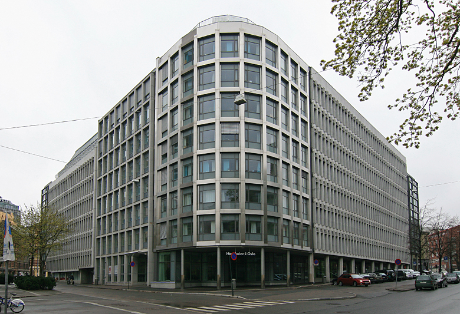

Phunsystems bak kulissene
Bedriften vår finner man sentralt i Oslo.
Vi er en nyetablert spillutvikler hvor alle de ansatte har et ønske om å jobbe med spill og design. Alle har jobbet med utvikling innenfor flere områder av spill, og vi har ambisjoner om å bli en viktig brikke i den norske spillindustrien.
Phunsystems er alle ivrige selv på spillmarkedet, og vi har tro på at våre spillprosjekter virkelig vil by på noe spillere ikke har sett før i et spill.
Våre strålende designere har en egen evne til å tenke utenfor boksen, og har virkelig lyst til å by på karakterer, npc'er (non-player characters) og omgivelser som vil gi spillerne et utsøkt inntrykk av spillene våre. Vi vil gjerne formidle at vi tar historiene i spillene på like stort alvor. Historiene vil by på alt! Klassiske temaer som krig, kjærlighet, liv og død vil alle være sentrale, og innimellom alt dette vil plottvister og humor ligge å gjøre det hele til episke og underholdende historier.
Dette er våre lokaler: 
{kind=link}